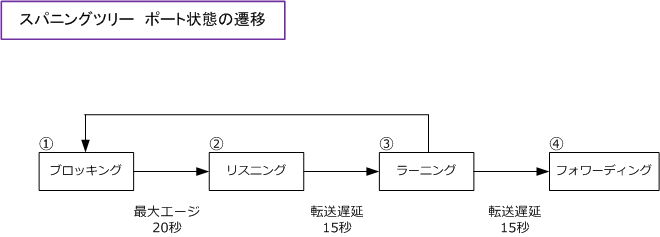
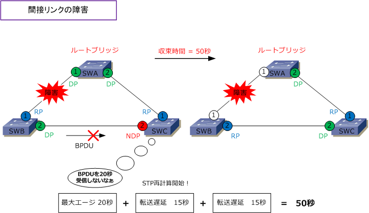
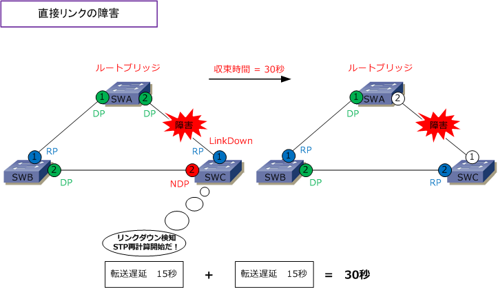
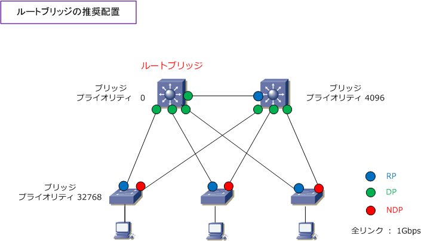

STP - Disabled / Blocking / Listening / Learning / Forwarding
STP - スパニングツリープロトコルのポート状態
スイッチが起動して、ポートが初めてリンクアップしたときにフォワーディング状態であるとループが発生 してしまいます。そのためSTPが有効なスイッチでは下図の順番でポート状態を遷移させています。そして この状態が遷移している間にBPDUがやり取りされ、ルートブリッジの選出や指定ポートなどが決定します。

| STPのポート状態 | 説明 | MACアドレスの学習 |
|---|---|---|
| ディセーブル | Disabled。管理者によりポートがshutdownされている状態。何も転送されない。 | × |
| ブロッキング | Blocking。データフレームを転送せずに、BPDUの受信のみ行う状態。 全てのポートは最初はブロッキング状態から開始する。 |
× |
| リスニング | Listening。BPDUを送受信し合い、ルートブリッジ、ルートポート、指定ポート の選出を行っている状態。MACアドレスも学習せずデータも転送しない状態。 |
× |
| ラーニング | Learning。BPDUを送受信し合う。非指定ポートになれば即座にブロッキングへ。 受信したフレームの送信元MACアドレスを学習しているがデータは転送しない。 |
○ |
| フォワーディング | Forwarding。ポートが、最終的にルートポートまたは指定ポートになった状態。 この状態になるとようやくそのポートで、ユーザのデータを転送するようになる。 |
○ |
STP - コンバージェンス
STPでは、ルートブリッジは2秒ごとにBPDUをツリーの下流の非ルートブリッジに転送して、そのツリーの ネットワーク状態を見ています。下流のスイッチは20秒間、BPDUを受信しなくなるとSTPの再計算を開始 します。再計算開始で、ポートはブロッキング ⇒ リスニング ⇒ ラーニング ⇒ の流れでポート状態を遷移 させます。そしてポートが最終的にフォワーディングまたはブロッキング状態になり安定すると収束します。
※ 収束（コンバージェンス）は「STPのポートがフォワーディングまたはブロッキング状態になり安定した状態になる」という意味。
なお、障害ポイントによって収束時間が異なります。下図ではSWA⇔SWB間で障害が発生し、SWCがSWB 経由でのルートブリッジからのBPDUを20秒間受信できなくなると、STPの再計算が発生し、リスニングから ラーニング状態を経て、合計50秒間で収束します。収束後は、再計算の結果、右下図のSTP状態になります。

一方、下図のようにSWA⇔SWC間で障害が発生した場合、ブロッキングポートを持つSWCは直接リンクに 障害が発生したことを直ちに知り、最大エージ（20秒）を待つことなく、STPの再計算が発生しリスニング からラーニング状態を経て計30秒間で収束します。収束後には再計算の結果、右下図のSTP状態になります。

STPタイマーには以下の種類がありタイマー値を変更することが可能です。ただし設定変更は非推奨です。
| タイマー | デフォルト値 | 説明 |
|---|---|---|
| Hello Time（ハロータイム） | 2秒 | スイッチのBPDUの送信間隔 |
| Max Age（最大エージ） | 20秒 | ルートブリッジからのBPDUを受信しなくなり障害発生と見なすまでの時間。 つまり、この20秒間にBPDUを受信しないとSTPの再計算が開始する。 |
| Forward Delay（転送遅延） | 15秒 | リスニング状態、ラーニング状態にとどまる時間 |
STP - ルートブリッジの配置
ルートブリッジはネットワークの中心に配置するのが推奨です。ネットワークの中心とはL2スイッチを束ねる L3スイッチなどが該当することが多いです。そのためにL3スイッチのブリッジプライオリティを 0 に設定し、 例えば冗長化されたもう1台のL3スイッチはブリッジプライオリティを 4096 に設定します。そしてその他の L2スイッチはブリッジプライオリティを設定せずデフォルトの32768とします。それにより、ルートブリッジ 選出後、ルートポート、指定ポート、非指定ポートの選出は下図構成となり、推奨設計のSTP状態となります。
